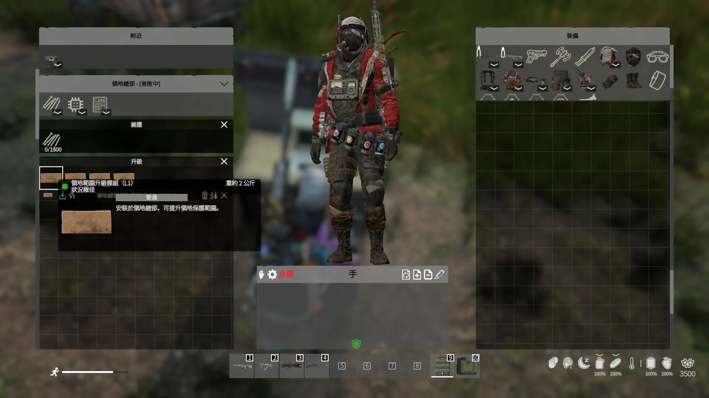
L1｜領地範圍升級模組
安裝於領地總部，可提升領地保護範圍。適合基地向外擴建後使用。
ASHZONE 採用 RA 建築系統。從一張建築藍圖開始，逐步放置地基、牆面與各種建築組件，再透過領地總部管理基地、邀請成員、安裝升級模組；本服另外整合裝備覺醒／重建工作台，讓基地不只是住處，也是完整的長期發展據點。
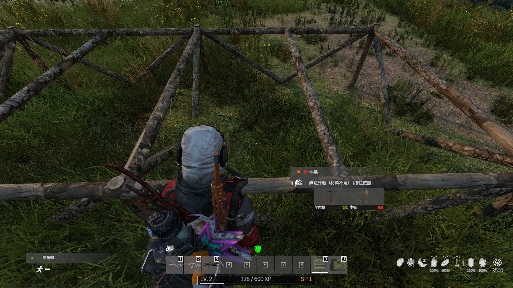
第一次蓋基地，可以照這個順序進行，不需要一次把所有系統都做完。
RA 建築的核心不是傳統柵欄套件，而是用藍圖選擇你要放置的建築部件。
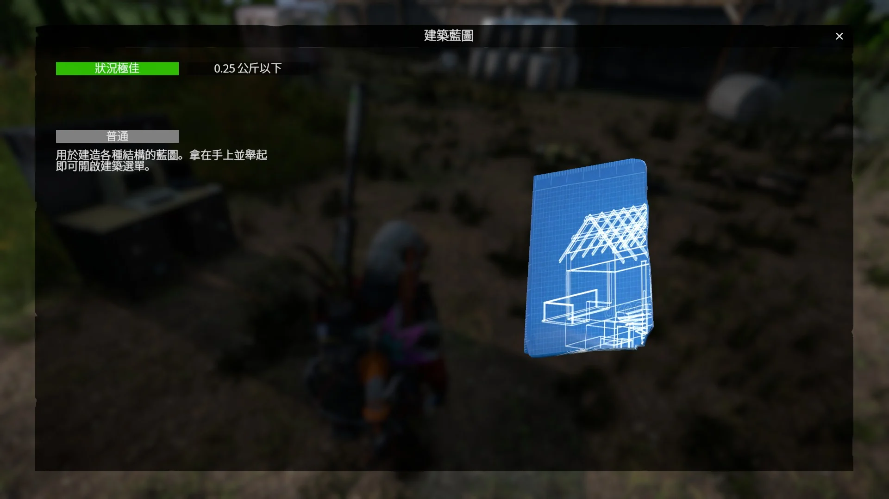
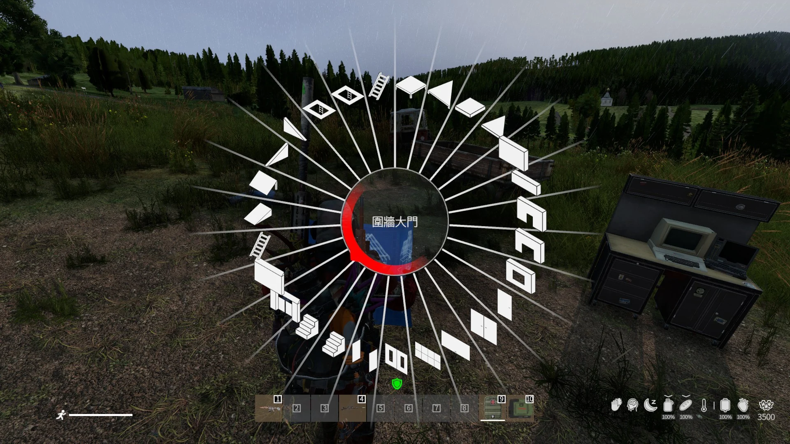
RA 原模組由紙張製作建築藍圖；若伺服器後續調整取得方式，以遊戲內為準。
將藍圖放在角色手中，舉起後開啟建築環形選單。
選好部件後移動預覽模型，確認位置允許放置再施工。
放下建築預覽後，依互動提示補齊材料，再完成對應的建築階段。
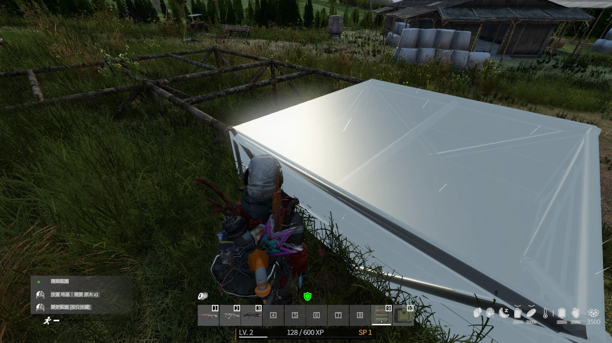
優先選擇平坦、動線清楚且有足夠擴建空間的位置。不要把領地 HQ 預定區塞在外牆邊緣。
放置後直接看物件互動提示。不同部件的材料不同，不建議照其他伺服器的固定數量表準備。
先決定大門、車庫門、樓梯與上下樓位置，再封牆；避免最後才發現角色或載具無法通行。
RA 原模組的基本邏輯是先建立框架，再逐步使用更高階材料強化建築。
初期基地主要使用原木、木板等基礎材料。先把基地輪廓與主要入口完成，再考慮大範圍強化。
使用金屬板升級重要結構。建議先強化外牆、大門、車庫與容易被突破的位置。
高階 RA 建材會使用混凝土磚。材料門檻較高，適合優先投入核心防線與重要房間。
基地成形後，領地總部就是管理與維護基地的核心。請把它放在相對安全、隊伍容易維護的位置。
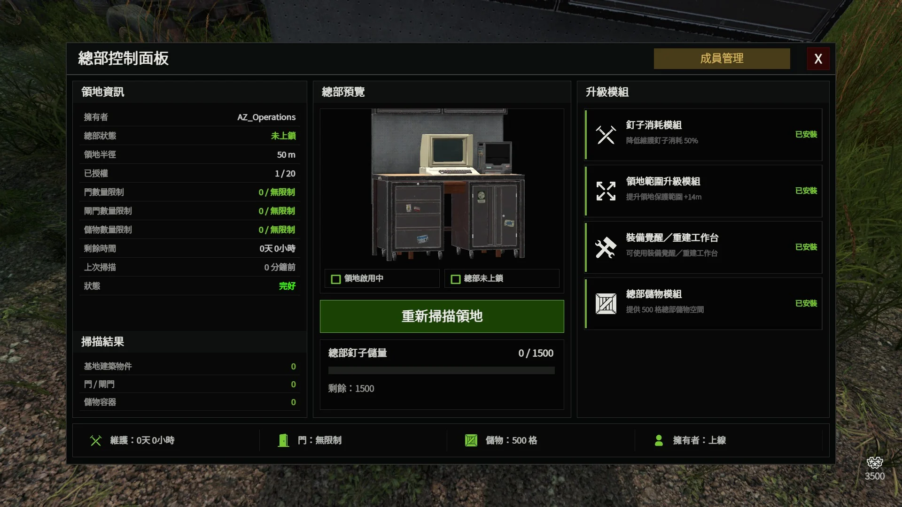
| 掃描領地 | 重新掃描目前領地內的建築、門與儲物狀況。 |
|---|---|
| 查看狀態 | 確認領地是否啟用、總部是否上鎖，以及目前維護狀態。 |
| 管理升級 | 在總部安裝 L1～L4 模組，擴充領地功能。 |
| 總部儲物 | 安裝對應模組後，可擴充總部本身的儲物能力。 |
RA 原模組的 Territory HQ 採用與原版旗杆相同概念的製作流程。完成後將總部部署在基地內，再從總部介面確認領地狀態。
ASHZONE 額外加入領地升級模組與成員管理，因此完成 HQ 後才算真正進入基地管理階段。
四種模組分別強化領地範圍、維護效率、總部儲物以及覺醒／重建工作台功能。

安裝於領地總部，可提升領地保護範圍。適合基地向外擴建後使用。
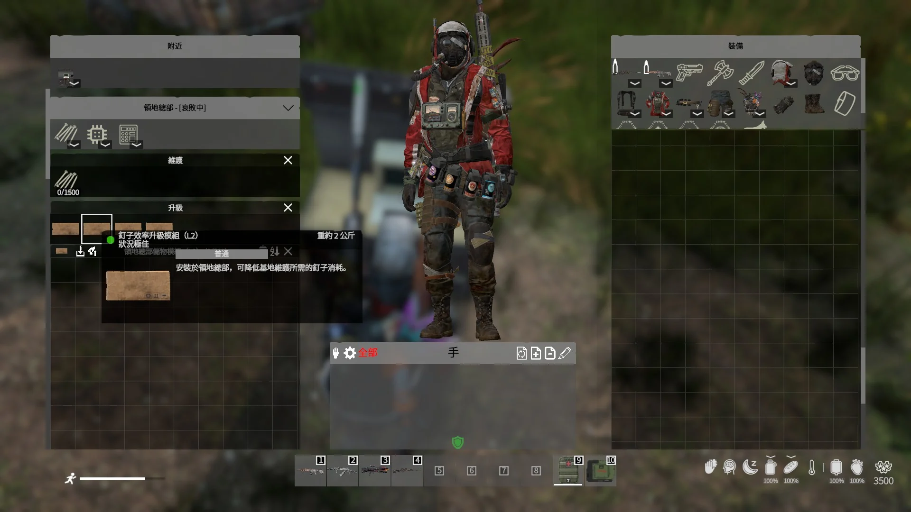
降低基地維護所需的釘子消耗，減輕大型基地的長期維護壓力。
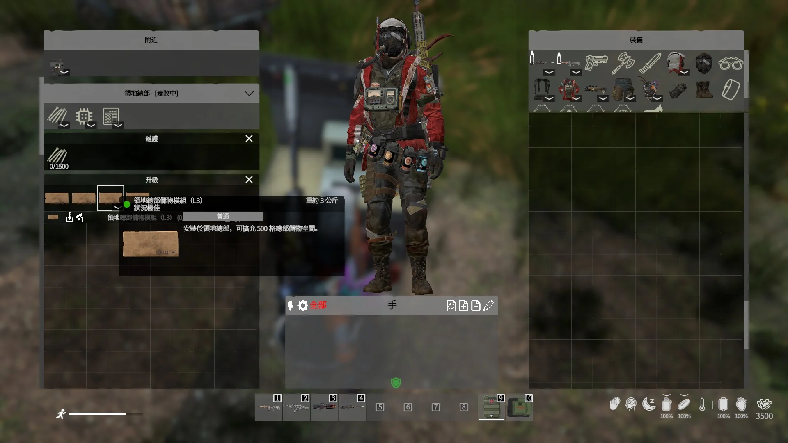
安裝後可擴充 500 格總部儲物空間，適合集中存放基地維護與工程物資。
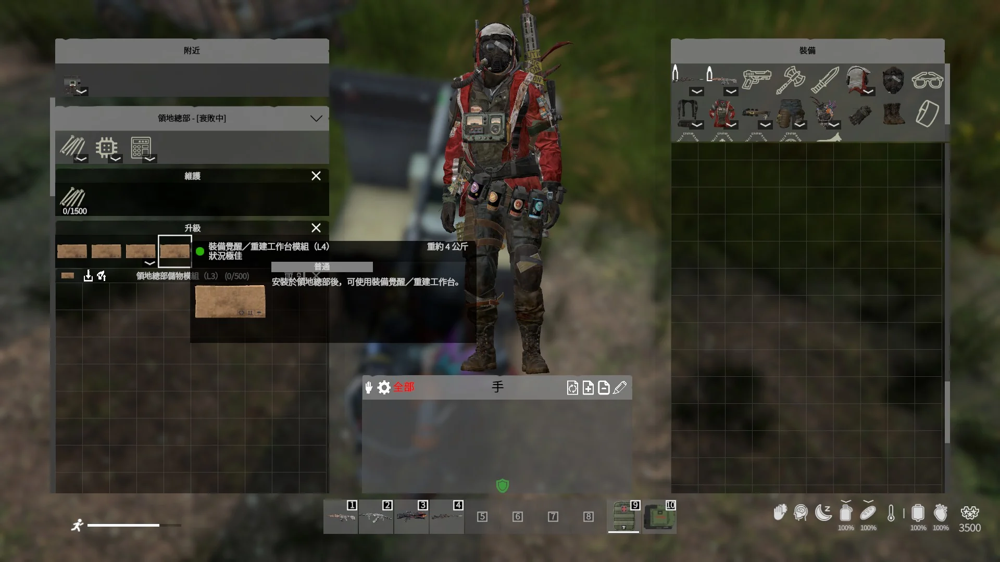
安裝後可使用 ASHZONE 的裝備覺醒／重建工作台，將基地功能延伸到裝備養成。
固定隊伍不用每個人各自蓋基地。由領地主人把可靠隊友加入同一領地即可共同管理。
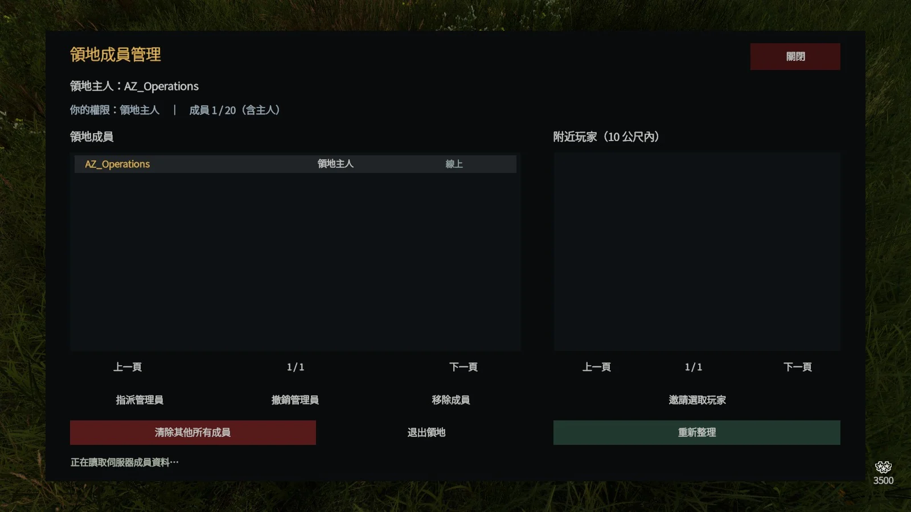
目前介面顯示附近玩家範圍為 10 公尺。
| 領地主人 | 最高管理權限，可管理整個領地成員。 |
|---|---|
| 管理員 | 可由領地主人指派或撤銷。 |
| 一般成員 | 加入領地後共同參與基地使用與建設。 |
| 目前上限 | 介面顯示最多 20 人（含主人）。 |
這不是 RA 原模組的標準建築功能，而是 ASHZONE 額外整合到基地系統的裝備養成功能。
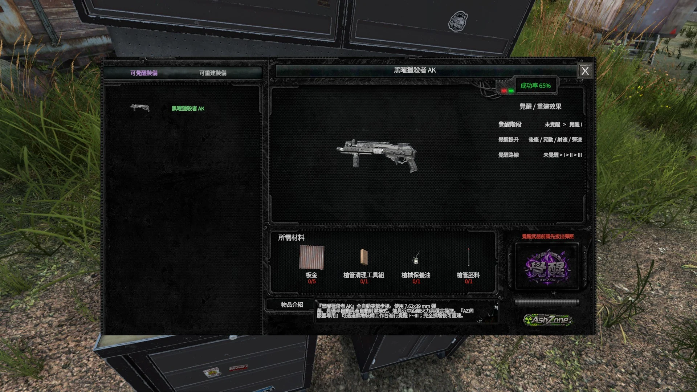
完成主要入口後，記得把「能進去」的基地變成「只有自己人能進去」的基地。
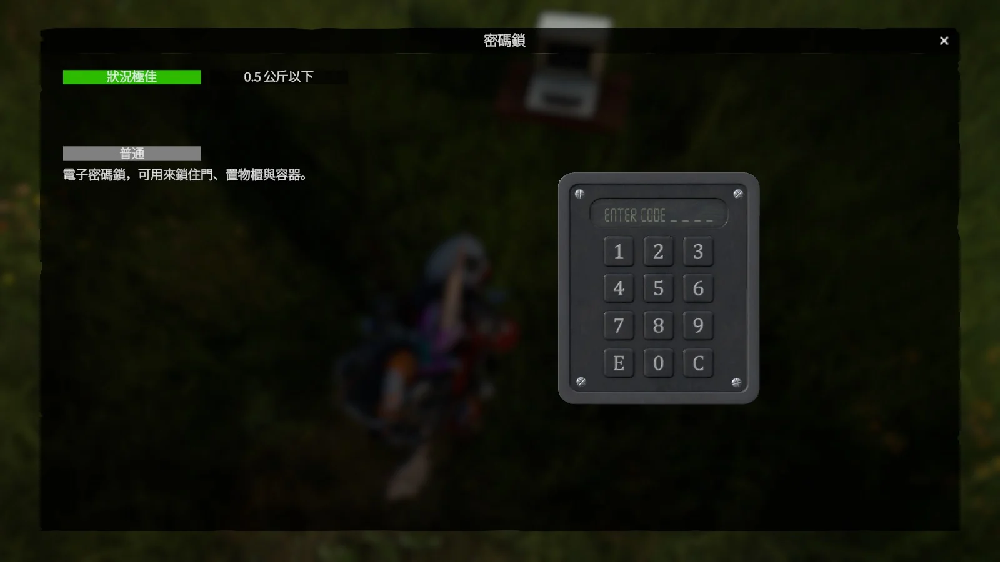
入口還沒完成前，不急著先裝鎖。
固定隊伍請用私下方式共享，不要公開貼在聊天頻道。
不要讓攻擊者突破第一道門就能直接接觸總部。
遇到不能放置、不能升級或領地功能不正常時，先照下面排查。
先依 RA 的製作流程取得建築藍圖。真正的建築選單是從藍圖開啟，不是直接用紙張放置建築。
檢查地形、碰撞、相鄰建築與禁建區。先把預覽移到較平坦、空間較大的位置測試。
看互動提示確認目前缺少的材料與工具。不同部件消耗不同，不要直接套用其他建築物的數量。
不是。RA Territory HQ 是 RA 建築自己的領地／維護核心；Expansion Territory 是另一套系統，兩者不要混為一談。
先確認領地總部已安裝 L4「裝備覺醒／重建工作台模組」。這是 ASHZONE 額外整合功能，不是拿到 RA 藍圖就會自動開放。
確認對方已靠近並出現在「附近玩家」清單；目前介面顯示搜尋範圍為 10 公尺，再重新整理清單後嘗試邀請。
先完成地基與主要結構，再建立領地總部、邀請隊友，逐步把基地發展成完整的長期據點。